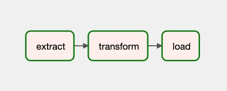

Airflow on Vineyard#
Big data analytical pipelines usually involves various kinds of workloads, each of them requires a dedicated compute system to finish the job, and intermediate data flows between tasks in the pipeline. The extra cost of transferring data takes a non-negligible portion in the end-to-end performance in real world deployment and the optimization is challenging.
Integrating Vineyard with Airflow brings opportunities to mitigate the problem.
Introducing Airflow#
Airflow is a platform that allows users programmatically author, schedule and monitor workflows. Users organize tasks a DAG and the Airflow scheduler executes the tasks on workflows while following the specified dependencies.
Taking the following ETL workflow as an example 1,
@dag(schedule_interval=None, start_date=days_ago(2), tags=['example'])
def tutorial_taskflow_api_etl():
@task()
def extract():
data_string = '{"1001": 301.27, "1002": 433.21, "1003": 502.22}'
order_data_dict = json.loads(data_string)
return order_data_dict
@task(multiple_outputs=True)
def transform(order_data_dict: dict):
return {"total_order_value": total_order_value}
@task()
def load(total_order_value: float):
print(f"Total order value is: {total_order_value:.2f}")
order_data = extract()
order_summary = transform(order_data)
load(order_summary["total_order_value"])
tutorial_etl_dag = tutorial_taskflow_api_etl()
It forms the following DAG, including three individual tasks as the nodes, and edges between nodes that describe the data dependency relations. Airflow scheduler runs the tasks one after another based the the data dependency.
Airflow on Vineyard#
Why Airflow on Vineyard#
Airflows works pretty well on defining and orchestrating the complex workflows. However, the data flow in the pipeline is still a missing piece. Airflow leverages the database backend, e.g., SQLite, MySQL and PostgreSQL to store the intermediate data between tasks. Large-scale data in real world scenarios cannot be fit into the database, e.g., large tensors, dataframes, and even distributed graphs, and external storage like HDFS, S3 will be used to store the intermediate data, and there’s only an identifer in the database.
Using external storage system to share the intermediate data among tasks in big data analytical pipelines suffers the performance cost of data copy, serialization/ serialization and network data transfer.
Vineyard is designed for sharing intermediate data in-memory efficiently for big data analytical pipeline and it is a natural fit for workloads on Airflow.
How Vineyard Works for Airflow#
Airflow allows users to registering an external XCom backend and that’s exactly vineyard is designed for.
Vineyard works as a XCom backend for airflow workers to allow transferring large-scale data objects between tasks that cannot be fit into the Airflow’s database backend without involving external storage systems like HDFS. The Vineyard XCom backend handles object migration as well when the required inputs is not located on where the task is scheduled to execute.
Vineyard’s XCom backend archives its functionalities by injecting hooks to the process of saving values to backend and fetching values from backend, as described follows:
class VineyardXCom(BaseXCom):
@staticmethod
def serialize_value(value: Any):
""" Store the value to vineyard server, and serialized the result
Object ID to save it into the backend database later.
"""
@staticmethod
def deserialize_value(result: "XCom") -> Any:
""" Obtain the Object ID after deserialization, and fetching the
underlying value from vineyard.
This value is resolved from vineyard objects in a zero-copy
fashion.
"""
When it Comes to Distributed Deployment#
Airflow supports executing tasks on a set of workers to parallelize the
processing of complex workflows. In a distributed deployment (with the
CeleryExecutor), two tasks that shares intermediate data might
be scheduled to different workers, and a remote data accessing is needed.
Vineyards supports migration for arbitrary objects. In the XCom backend, when the IPC client meets remote objects, it first trigger a migration action to move the objects to local to make sure the input data is ready before executing the tasks.
The migration of objects is transparent to users and relieves the burden of thinking about of complex data operations and movement then the data scientists can focus on the computation logic when developing a big data applications on Airflow.
Running Vineyard + Airflow#
Users can try Airflow provider for Vineyard by the following steps:
Install required packages:
pip3 install airflow-provider-vineyard
Configure Vineyard locally
The vineyard server can be easier launched locally with the following command:
python -m vineyard --socket=/tmp/vineyard.sockSee also our documentation about launching vineyard.
Configure Airflow to use the vineyard XCom backend by specifying the environment variable
export AIRFLOW__CORE__XCOM_BACKEND=vineyard.contrib.airflow.xcom.VineyardXCom
and configure the location of UNIX-domain IPC socket for vineyard client by
export AIRFLOW__VINEYARD__IPC_SOCKET=/tmp/vineyard.sock
or
export VINEYARD_IPC_SOCKET=/tmp/vineyard.sock
Launching your airflow scheduler and workers, and run the following DAG as example,
import numpy as np import pandas as pd from airflow.decorators import dag, task from airflow.utils.dates import days_ago default_args = { 'owner': 'airflow', } @dag(default_args=default_args, schedule_interval=None, start_date=days_ago(2), tags=['example']) def taskflow_etl_pandas(): @task() def extract(): order_data_dict = pd.DataFrame({ 'a': np.random.rand(100000), 'b': np.random.rand(100000), }) return order_data_dict @task(multiple_outputs=True) def transform(order_data_dict: dict): return {"total_order_value": order_data_dict["a"].sum()} @task() def load(total_order_value: float): print(f"Total order value is: {total_order_value:.2f}") order_data = extract() order_summary = transform(order_data) load(order_summary["total_order_value"]) taskflow_etl_pandas_dag = taskflow_etl_pandas()
In above example, task extract and task transform shares a
pandas.DataFrame as the intermediate data, which is impossible as
it cannot be pickled and when the data is large, it cannot be fit into the
table in backend databases of Airflow.
The example is adapted from the documentation of Airflow, see also Tutorial on the Taskflow API.
Further Ahead#
The Airflow provider for Vineyard is still in every experimental stage and shows a lot of gains for efficiently and flexibly sharing large-scale intermediate data using Vineyard for big data analytical workflows in Airflow.
The Airflow community is also striving on better support for modern big data & AI applications and we believe integrating Vineyard, Airflow, and other cloud-native infrastructures could deliver a better and more efficient solution for data scientists.